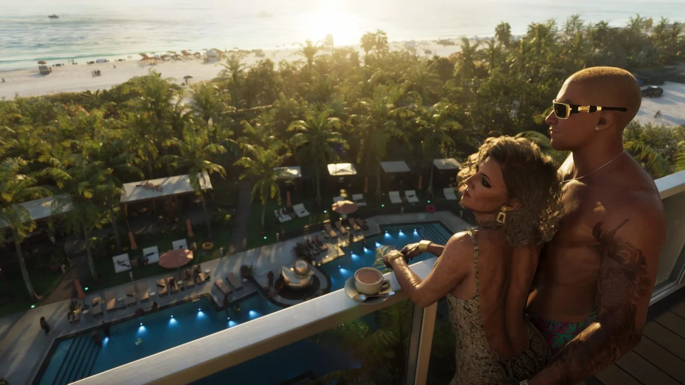

Day Release: прохождение миссии GTA 6
Опубликовано:

- Первая поездка в Вайс-Сити: Маттиа и беременная Кэт зовут Джейсона и Лусию на яхту, а потом — в ночной город, мотель Huxley и клуб NINE1NINE. Миссия почти без стрельбы, но с кучей выборов на отношения; заканчивается прыжком с балкона в бассейн.
- Глава 1, миссия 16 из 22. Играем за: Джейсон и Лусия.
- Награда: нет (рост отношений).
Миссия коротко
| Глава | 1. Just Like Paradise |
| Номер в сюжете | 16 |
| Играем за | Джейсон и Лусия |
| Кто даёт | Маттиа |
| Где начинается | бар Rusty Anchor, Ки-Ленто → яхта у Вайс-Сити |
| Условие | звонок после Down to Earth |
| Награда | нет (рост отношений) |
| Переиграть | нельзя — сохраняйтесь вручную |
Где начинается
Прохождение по шагам
- Закажите выпивку у бармена в глубине Rusty Anchor — начнётся ролик. Помощник Маттиа, Бурим, снимет с Лусии браслет; пожимать руку Маттиа необязательно.
- Плывите к яхте на катере за баром — метка у побережья Вайс-Сити, плыть долго.
- Гонка на гидроциклах. Решите, поедет ли Лусия с Джейсоном (плюс к отношениям) или отдельно, и гоняйтесь с Маттиа. Победа не важна.
- Стреляйте по бутылкам шампанского за Лусию. Замедление — L3 + R3. Если попасть во все, Джейсон отметит это в ролике — больше ничего не меняется.
- Выберите платье из гардероба Кэт — чисто внешний выбор до конца миссии.
- Найдите Маттиа в комнате посередине нижней палубы — на две палубы ниже точки появления.
- Ночной Вайс-Сити. Езжайте за Маттиа на спорткаре (при аварии машину можно сбросить — она восстановится), потом гонка до мотеля Huxley.
- NINE1NINE. Найдите Маттиа за столиком в клубе и потанцуйте за Лусию с Джейсоном (левый стик к нему).
- Побег. Вечеринка переезжает в апартаменты. В коридоре — правая дверь в конце. Охрана поднимает тревогу — прыгайте с балкона в бассейн.
Советы
- На гидроцикле Лусии лучше ехать вместе с Джейсоном — это поднимает отношения; результат гонки не важен.
- Маттиа на яхте — в средней комнате на самой нижней палубе, на две палубы ниже старта.
- Платье для Лусии — чёрное, коричневое или золотое — только на ваш вкус.
- Держаться за руки в клубе и после побега — необязательно, но иногда поднимает отношения.
- После миссии Джейсон снова на Ки-Ленто.
- На следующий день Лусия может позвонить с работы и попросить забрать её до 16:00 (задание Clock Out) — тоже плюс к отношениям.
Подробности и секреты
- На карте миссия называется Meet Mattia & Kat; Rusty Anchor — на северном краю Ки-Ленто (Beebom, ofzenandcomputing).
- Помощник Маттиа Бурим снимает с Лусии браслет слежения; пожимать руку Маттиа необязательно (eGamers, games.gg).
- Здесь игра впервые уводит так далеко на север — к Вайс-Сити (wiki.eso-ui).
- По данным gta6bible, на яхте есть пропускаемые предметы — осмотритесь на верхних палубах.
Что можно пропустить
Все выборы — для отношений: Лусия на одном гидроцикле с Джейсоном, держаться за руки.
Частые вопросы
Влияет ли гонка на гидроциклах в Day Release?
Нет: важен только выбор, поедет ли Лусия с Джейсоном, — он поднимает отношения.
Как замедлить время в Day Release?
L3 + R3 — режим Focus.
Где Маттиа на яхте в Day Release?
На самой нижней палубе, в комнате посередине — на две палубы ниже места старта.
Ехать ли Лусии на гидроцикле с Джейсоном?
Да, если хотите поднять отношения: совместная поездка их улучшает, а результат гонки ни на что не влияет.
Источники: PowerPyx, «GTA 6 Day Release (Meet Mattia & Kat)» и «Clock Out», 19.11.2026; PC Gamer, «GTA 6 mission list», 19.11.2026; GamesRadar, Beebom, eGamers, games.gg, wiki.eso-ui, wikigtavi, gta6bible, ofzenandcomputing, TheDroidGuy, gamingpromax — Day Release, 18–28.11.2026. Кнопки указаны для PS5, в скобках — Xbox. Названия миссий — как в английской версии игры.